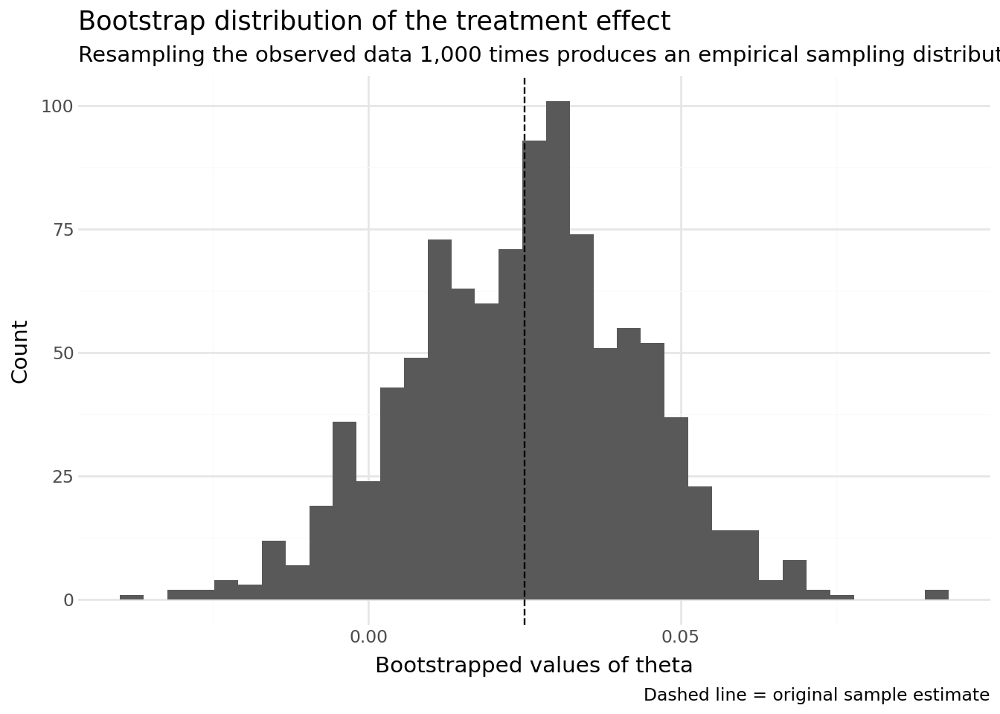
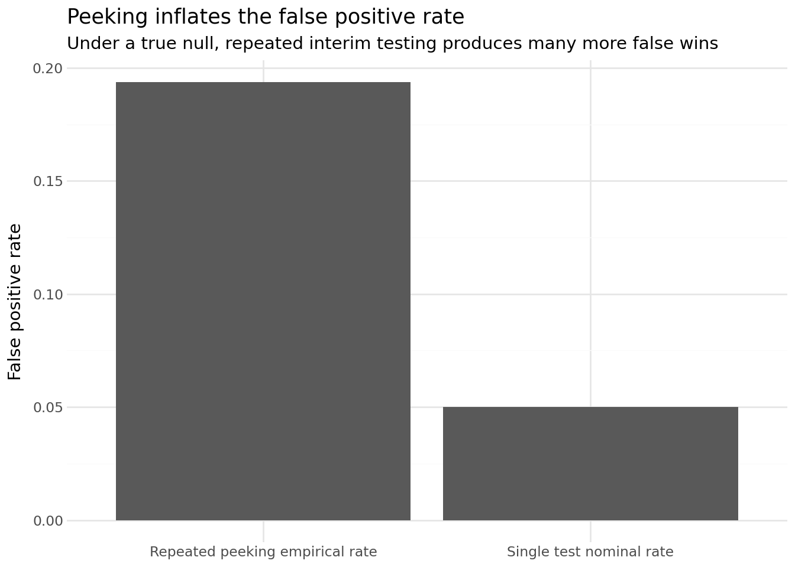

Simulating Key Ideas from Classical Frequentist Statistics
Author
Ebrahim Alhaddad
Published
April 15, 2026
Introduction
Imagine I run a website with a homepage prompt asking visitors to sign up for a newsletter. I want to know which wording is more effective at turning visitors into subscribers. One version of the call to action reads “Sign up for our newsletter here!” while the other reads “Stay up to date by signing up!”
Rather than guessing which message sounds better, I can run an A/B test. In an A/B test, visitors are randomly assigned to see one of the two versions, and I compare the sign-up rates across the two groups. Random assignment is what makes the comparison meaningful: if the groups are formed randomly, then differences in outcomes are more plausibly due to the CTA itself rather than to systematic differences in the visitors who saw each version.
This post uses simulation to show how classical frequentist statistics helps analyze that kind of experiment. The main idea is simple: even when one CTA is truly better, the observed results will still bounce around because user behavior is noisy. Statistical inference helps us separate real differences from ordinary sampling variation.
The A/B Test as a Statistical Problem
For each visitor, the outcome is binary: they either sign up or they do not. That means each individual observation can be modeled as a draw from a Bernoulli distribution with parameter \(\pi\), where \(\pi\) is the probability of signing up.
Because the wording of the CTA may affect behavior, I allow the sign-up probability to differ across the two groups. If a visitor sees CTA A, their outcome is a Bernoulli random variable with probability \(\pi_A\). If a visitor sees CTA B, their outcome is a Bernoulli random variable with probability \(\pi_B\). In both groups the realized value is either 1 (signed up) or 0 (did not sign up).
The quantity I care about is the difference in sign-up rates:
\[
\theta = \pi_A - \pi_B.
\]
This is the treatment effect in the language of the experiment. A positive value of \(\theta\) means CTA A performs better; a negative value means CTA B performs better.
I estimate \(\theta\) using the difference in sample means:
\[
\hat\theta = \bar X_A - \bar X_B.
\]
Because the observations are 0/1 outcomes, each sample mean is just a sample proportion. So this estimator can also be written as:
\[
\hat\theta = \hat\pi_A - \hat\pi_B.
\]
In other words, the estimator is simply the observed difference in conversion rates between the two CTA groups.
Simulating Data
In a real A/B test, I would not know the true values of \(\pi_A\) and \(\pi_B\) ahead of time. That is exactly why I would run the experiment. For this exercise, though, it is useful to choose the true values myself so I can study how the estimator behaves when the truth is known.
I set the sign-up probabilities to \(\pi_A = 0.22\) and \(\pi_B = 0.18\). That means the true treatment effect is:
\[
\theta = 0.22 - 0.18 = 0.04.
\]
I then simulate 1,000 visitors in group A and 1,000 visitors in group B, for a total of 2,000 Bernoulli draws.
In this particular simulated run, the observed conversion rates are close to the truth, but not identical to it. That small gap is important: even when the underlying probabilities are fixed, samples still fluctuate. The rest of the post is about understanding that fluctuation and learning how to quantify it.
The Law of Large Numbers
The Law of Large Numbers (LLN) says that as the sample size grows, the sample mean converges to the population mean. Since my estimator \(\hat\theta = \bar X_A - \bar X_B\) is built from sample means, the LLN is what gives me confidence that the estimated treatment effect should get closer to the true \(\theta\) as more observations are collected.
To make that concrete, I compute the observation-by-observation differences between the simulated A and B draws, then calculate the cumulative average of those differences after 1 draw, 2 draws, and so on up to 1,000 draws.
At the beginning of the plot, the running average is noisy because each new observation has a large influence when only a few data points have been seen. A single extra signup or non-signup can swing the estimate sharply. As the sample grows, those swings become smaller and the running mean settles down near the true value of 0.04.
The main takeaway is that larger samples produce more stable estimates. The LLN does not guarantee that every sample estimate will be exactly correct, but it does say that with enough data the estimator should be close to the truth. That is the first major reason large experiments are valuable.
Bootstrap Standard Errors
Once I trust the estimator as a reasonable measure of the treatment effect, the next question is about precision. A point estimate alone is incomplete. I also want a standard error and a confidence interval so I can describe how uncertain that estimate is.
The bootstrap is a resampling method for estimating the variability of a statistic without relying entirely on a closed-form formula. The idea is to treat the observed sample as a stand-in for the population. Then I repeatedly sample from that observed data with replacement, compute the statistic each time, and use the spread of those resampled statistics as an estimate of the statistic’s standard error.
Here is the bootstrap procedure for this experiment:
From the 1,000 CTA A observations and 1,000 CTA B observations, draw a bootstrap sample of size 1,000 from each group, with replacement.
In this simulation, the bootstrapped standard error and the analytical standard error are very close, which is reassuring. That is exactly what I would hope to see: two different methods for measuring uncertainty arriving at nearly the same answer.
Using the bootstrapped standard error, the 95% confidence interval for \(\theta\) is reported above. Since the interval stays above zero in this run, the data suggest that CTA A likely outperforms CTA B. The effect is not just positive at the point estimate; the plausible range of values is positive as well.

The Central Limit Theorem
The Central Limit Theorem (CLT) says that regardless of the shape of the underlying population distribution, the sampling distribution of the sample mean becomes approximately Normal as the sample size gets large enough. Since the difference in sample means is just one average minus another, the CLT also tells me that the sampling distribution of \(\hat\theta\) should become more bell-shaped as sample size increases.
To demonstrate that, I simulate 1,000 separate A/B tests for each of four sample sizes: \(n \in \{25, 50, 100, 500\}\). For each sample size, I draw \(n\) observations from CTA A and \(n\) observations from CTA B, compute \(\hat\theta\), and then look at the histogram of those 1,000 estimates.
The pattern is exactly what the CLT predicts. At small sample sizes, the distribution of \(\hat\theta\) looks rougher and more irregular. As the sample size increases, the histogram becomes smoother and more bell-shaped. It also becomes more concentrated around the true effect, which means the estimator is getting more precise.
So the CLT gives two useful insights here. First, it helps justify Normal-based inference for large samples. Second, it explains why larger experiments tend to produce both cleaner-looking sampling distributions and narrower confidence intervals.
Hypothesis Testing
Now that the CLT suggests the sampling distribution of \(\hat\theta\) is approximately Normal for large samples, I can use that result to perform a formal hypothesis test.
The null hypothesis is:
\[
H_0: \theta = 0,
\]
which means the two CTAs have the same sign-up rate. The alternative is:
\[
H_1: \theta \neq 0,
\]
which says the CTAs differ.
A hypothesis test asks whether the data provide enough evidence against the null to justify rejecting it. To do that, I standardize the estimate:
\[
z = \frac{\hat\theta - 0}{SE(\hat\theta)}.
\]
The logic of this standardization is:
By the CLT, \(\hat\theta\) is approximately Normally distributed when the sample is large.
Under \(H_0\), the mean of that distribution is 0.
When I divide a Normal random variable by its standard deviation, I get a standard Normal variable. So under the null, \(z \;\dot\sim\; N(0,1)\).
Once I know the reference distribution of the test statistic under the null, I can compute a p-value.
This is sometimes loosely called a “t-test,” but that name is slightly imprecise in this setting. The classical t-test comes from a Normal-data model with an estimated variance, which gives an exact t-distribution result. Here the data are Bernoulli, not Normal. What really justifies the test is the CLT, which gives an approximate Normal reference distribution. Since the standard error is estimated from the data, this procedure is closer in spirit to a large-sample z-test. In practice the distinction matters little at large sample sizes, but conceptually it is still worth understanding.
The p-value is the probability of observing a test statistic at least this extreme if the null hypothesis were true. In this simulation, the p-value is small enough to reject \(H_0\) at the 5% significance level. Interpreted plainly, the data provide evidence that the two CTAs do not perform equally, and the estimated difference favors CTA A.
The T-Test as a Regression
The two-sample comparison above is mathematically equivalent to a simple linear regression. This is useful because regression machinery generalizes easily to richer experimental setups.
To see the connection, I stack the two groups into one dataset with:
an outcome \(Y_i\), equal to 1 if visitor \(i\) signs up and 0 otherwise
an indicator \(D_i\), equal to 1 if visitor \(i\) saw CTA A and 0 if visitor \(i\) saw CTA B
As expected, the regression coefficient on the treatment indicator matches the earlier difference-in-means estimate. The associated test statistic and p-value are also extremely close. Any small discrepancy in the standard error comes from the fact that standard OLS and the two-sample Bernoulli formula make slightly different variance assumptions.
This equivalence matters because regression provides a flexible framework. Once the simple A/B test is written this way, it becomes straightforward to add controls, interactions, or even multiple treatment arms while keeping the same general logic of estimation and inference.
The Problem with Peeking
Suppose my boss does not want to wait until all 1,000 visitors per group have arrived. Instead, she wants to check the results after every 100 visitors per group and stop the moment one of those interim tests is significant at the \(\alpha = 0.05\) level.
Under classical frequentist statistics, this is a problem. A single test at the 5% level has a 5% chance of producing a false positive when the null is true. But repeated peeking means repeated opportunities to make that mistake. Even if the null is true throughout, the probability of seeing at least one significant result across many looks can be much larger than 5%.
To show that, I simulate a world where the null is true: \(\pi_A = \pi_B = 0.20\). For each experiment, I draw 1,000 observations per group, compute p-values after every 100 observations, and record whether any of the 10 peeks crosses the 0.05 threshold. Then I repeat that entire experiment 10,000 times.
peek_rng = np.random.default_rng(SEED)num_experiments =10_000peek_sizes =list(range(100, 1001, 100))any_sig = np.zeros(num_experiments, dtype=int)for exp_idx inrange(num_experiments): a_null = peek_rng.binomial(1, 0.20, n) b_null = peek_rng.binomial(1, 0.20, n) found_sig =0for m in peek_sizes: pa = a_null[:m].mean() pb = b_null[:m].mean() diff = pa - pb se = math.sqrt(pa * (1- pa) / m + pb * (1- pb) / m)if se ==0: pval =1.0else: z = diff / se pval =2* (1- stats.norm.cdf(abs(z)))if pval <0.05: found_sig =1break any_sig[exp_idx] = found_sigpeek_false_positive_rate = any_sig.mean()peek_tbl = pl.DataFrame({"Scenario": ["Single test at alpha = 0.05","Peeking 10 times at alpha = 0.05" ],"False positive rate": [0.05, peek_false_positive_rate]})pretty_table(peek_tbl, percent_cols=["False positive rate"], digits=4)
Scenario
False positive rate
Single test at alpha = 0.05
5.0%
Peeking 10 times at alpha = 0.05
19.4%

The simulated false positive rate under repeated peeking is much higher than the nominal 5% rate from a single test. That means if I keep checking the results and stop as soon as I see significance, I dramatically increase my chance of falsely declaring a winner when the two CTAs are actually identical.
In practice, this is why sequential testing requires special methods or corrected stopping rules. Classical fixed-sample inference assumes the test plan is set in advance. Once that plan is violated by repeated peeking, the advertised error rate is no longer trustworthy.
Conclusion
This simulated A/B test brings several core ideas from frequentist statistics into one concrete example. The LLN explains why estimates stabilize with more data. The bootstrap provides a practical way to estimate standard errors and confidence intervals. The CLT explains why Normal-based inference becomes reasonable in large samples. Hypothesis testing translates uncertainty into a formal decision rule. Regression reveals that the familiar difference-in-means test is part of a broader modeling framework. And the peeking simulation shows how easy it is to inflate false positives when experimental discipline breaks down.
Most importantly, the assignment shows that A/B testing is not just a business tool. It is also a statistical problem. Randomized experiments produce noisy data, and frequentist methods give us a principled way to estimate treatment effects, quantify uncertainty, and avoid being fooled by random variation.